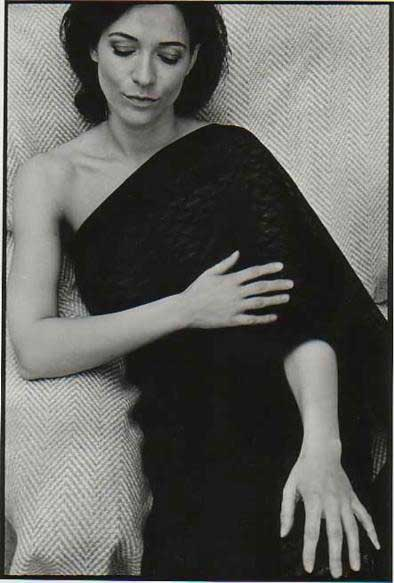

Die Zusammenarbeit von Künstlern in Südthüringen ist eine alltägliche Angelegenheit. So fanden eines Tages auch der Fotograf Günter Giese und der Lyriker Holger Uske zusammen. Giese war gerade dabei, eine Porträtserie mit Bettina M. zu gestalten. Wie wäre es, gezielt zu den Fotos Gedichte zu verfassen? So begann ein bislang einzigartiges Experiment. Zu vorhandenen Fotos entstanden gezielt Texte. Sie nehmen Fotomotive auf, erweitern sie, konterkarieren sie, setzen ein lyrisches Ich ins Verhältnis dazu. Am Ende stand eine Ausstellung in der Galerie im Congress Centrum Suhl mit Fotos von Günter Giese – und Gedichten von Holger Uske.
„Ritter der Minne sollen sie sein, Günter Giese und Holger Uske. So jedenfalls hat Herbert König, der Laudator, die beiden Herren mit einem verschmitzten Seitenblick bezeichnet und damit Lachen beim Publikum geerntet. So unrecht hat er gar nicht, lässt man den Blick durch ihre Ausstellung schweifen... Das Ergebnis sind Porträts mal offen, ehrlich und schnörkellos, mal herb und sinnlich, mal kindlich und erotisch, dann wieder am Arbeitsplatz oder beim Zeichnen an der Hobby-Staffelei. Stets zeigen die Gesichter eine selbstbewusste Frau aus unserer Mitte. Doch die Ausstellung bietet weit mehr. Die lyrischen Texte von Holger Uske ergänzen jede der Momentaufnahmen auf unverwechselbare Weise. Uske spannt mit seinen Gedichten den Bogen vom Gesehenen zu Gefühlen, zu Träumen und Sehnsüchten. Die ästhetisch ansprechenden Bilder und die sinnlichen Texte korrespondieren unaufdringlich und in bester Harmonie. Eine tolle Idee, ein gelungenes Experiment, eine sehenswerte Ausstellung." (Ruth Schafft, Freies Wort, 31.01.2004. Die Ausstellung findet sich komplett im Begleitbuch wieder.)

Fotografisch-lyrisches Porträt. Fotografien von Günter Giese, Suhl.
Gesichter wie Tage, Tage einer jungen Frau. Überraschende Einsichten, Entdeckungen: manchmal wissen Fotos mehr zu berichten als Geschichten, manchmal bringen Gedichte Nuancen hinzu, die die Bilder auf den ersten Blick nicht trugen. So kam diese Sammlung zustande. Eine junge Frau in Thüringen. Die Gesichter der Bettina M.
(Einleitung des Bandes)
ABENDBILD
Bedecke deine Blöße nun
Und lass dich fallen
In die Nacht. Ein Traum
Hebt langsam seinen Vorhang an
Bittet dich herein
Da hat der Tag auf einmal
Andre Farben, andren Klang
Und spielt ein andres Spiel
Bedecke deine Blöße
Ich will noch eine Weile
Um dich sein: eine Farbe
Ein Ton in deinem Traum